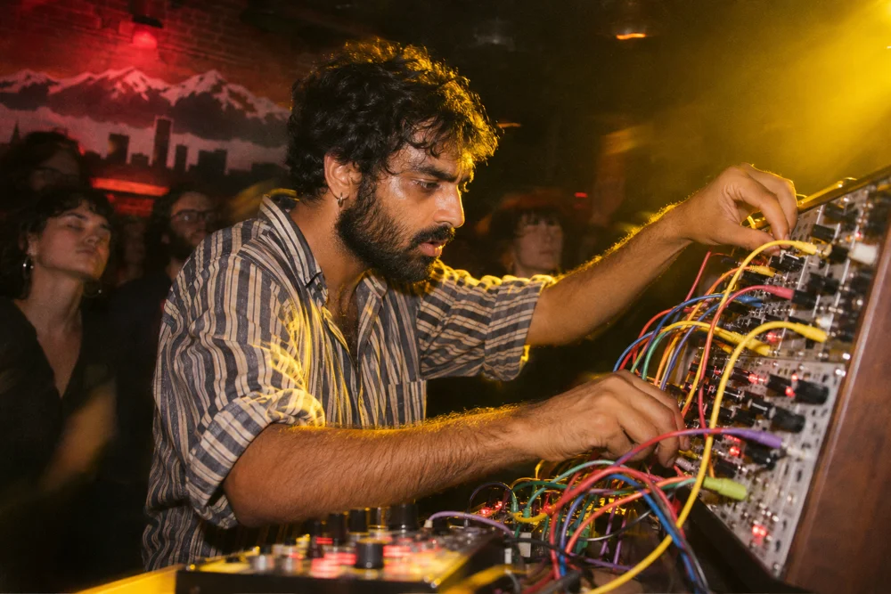

The tricky moment at Relay After Hours comes before the first solo synth note. Mica Relay has a record turning. Copper Latch has a sequencer waiting. For the handoff, he taps the pulse by ear and brings in a closed hi-hat under the record’s last phrase.
A hi-hat gives both performers room to correct a small drift. Once it sits comfortably behind the snare, Mica can ease the bass out and Copper can open the filter. From the floor, the change of instruments should feel like a single long mix.
Explore Relay After Hours